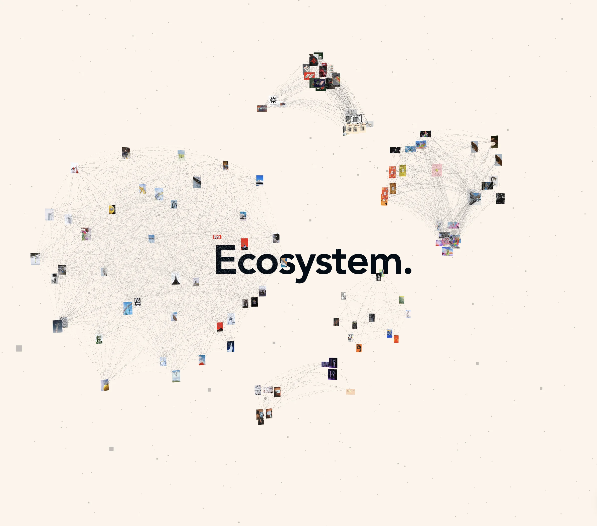
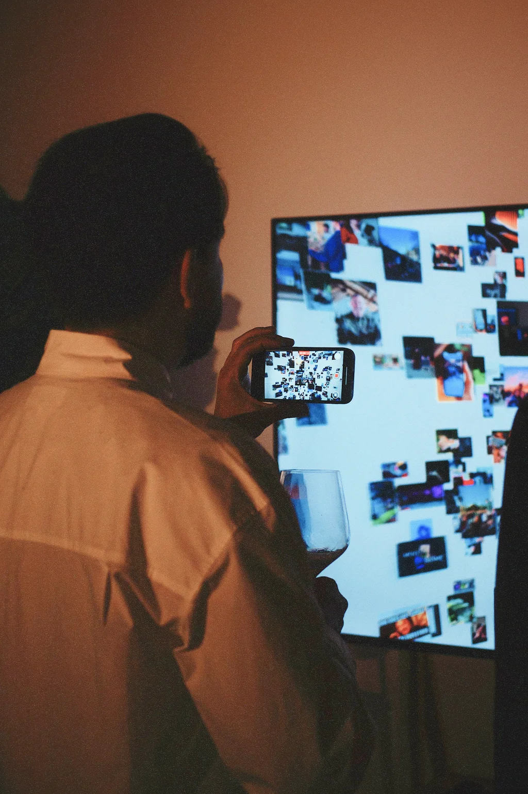
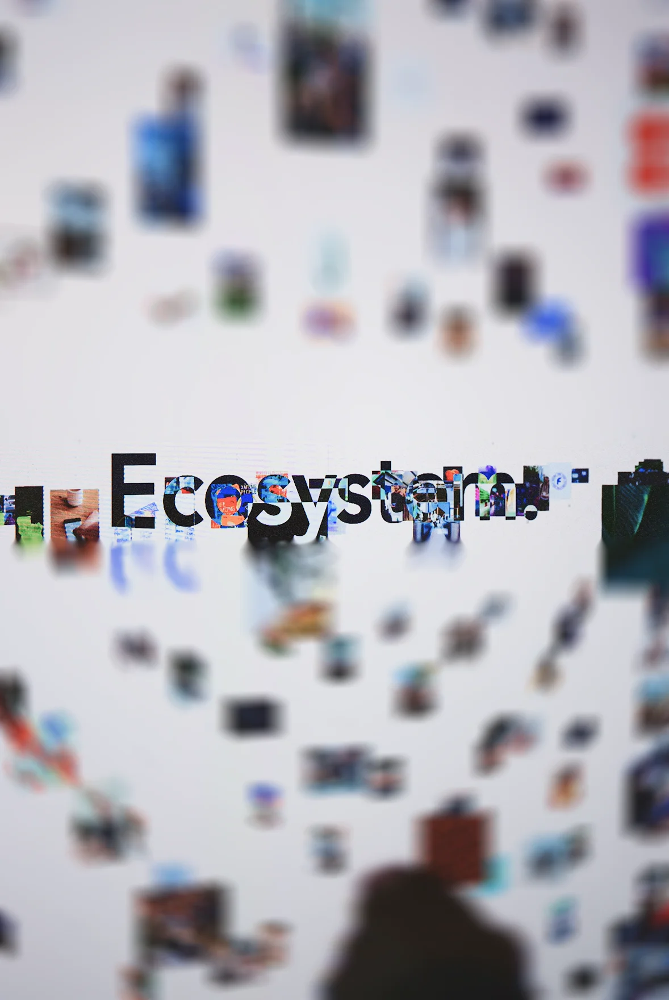
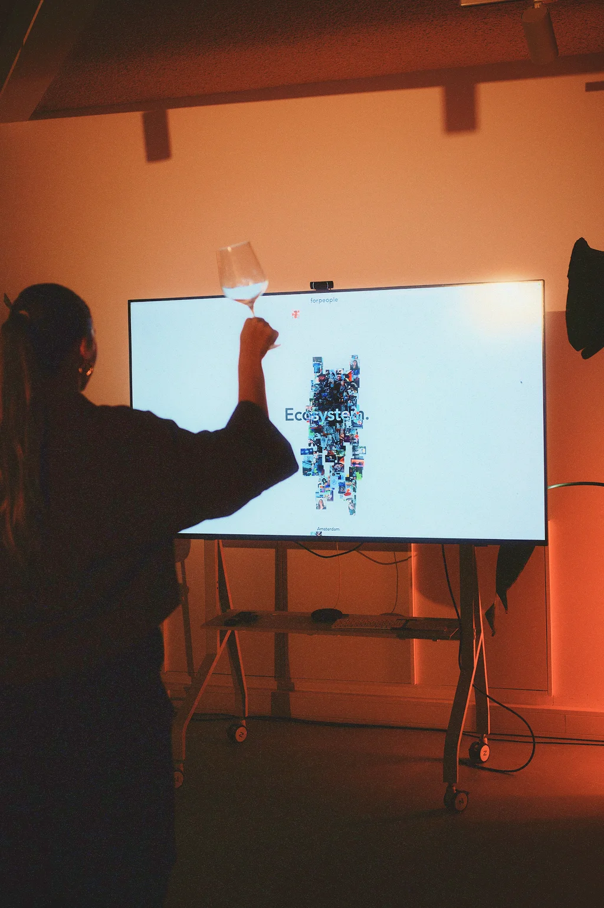
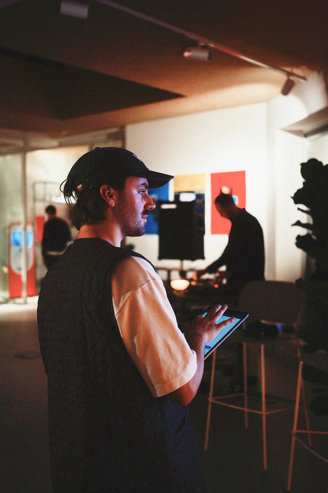
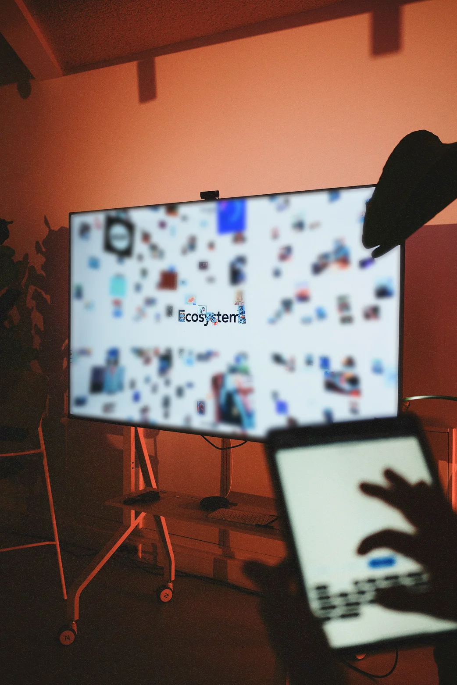

Ecosystem
Ecosystem is a webpage developed to celebrate the anniversary of the new Forpeople studio in Amsterdam. The platform presents the studio’s work through the metaphor of an ecosystem, structuring projects as interconnected elements within a dynamic digital environment. Built through custom code, the website integrates motion and interactive behaviors to encourage exploration beyond a traditional portfolio format. The live studio version incorporated camera tracking, allowing the interface to respond to the movement of visitors in front of the screen. The version presented includes adapted content and personal photography for confidentiality reasons.
Collaboration: Forpeople amsterdam




